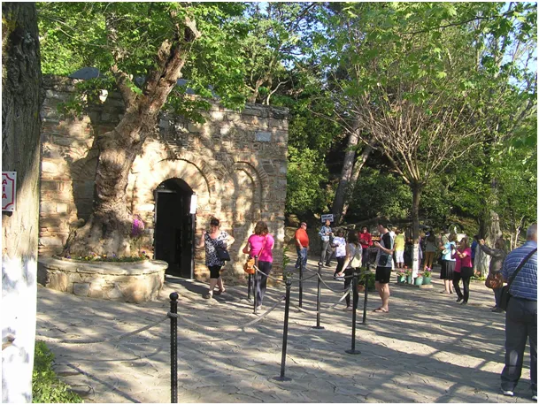

Teksty inspirowane starożytną Anatolią.
Gdy zwiedzamy Turcję, dosłownie potykamy się o Starożytną Grecję, Rzym i początki chrześcijaństwa. Gdy tylko opuścimy Europę przekraczając cieśninę Dardanele spotkamy ruiny Troi, kawałek dalej w Efezie możemy zobaczyć ruiny Bazyliki św. Jana Ewangelisty i jego grób. Na wzgórzach za miastem możemy odwiedzić ostatni, ziemski dom Najświętszej Marii Panny, Meryem Ana Evi. W bardzo wielu miastach Turcji bywał św. Paweł w swych misjach. Jest tak, ponieważ prześladowani w Judei chrześcijanie uciekali często właśnie do Anatolii a po Powstaniu Żydowskim z roku 66, Rzymianie zrównali Jerozolimę z ziemią. Jest jeszcze jeden powód, nową wiarę przyjmowali chętnie Grecy, bo była spójna z ich filozofią.

Podróżując po Turcji napisałem kilka tekstów inspirowany historią miejsc, których dotykałem. Polecam na zimowe wieczory. Linki do tych tekstów zamieszczam poniżej:
Herod a św. Józef: karykatura władzy kontra wzór męskości.
Narodziny Boga wszystkich ludzi.
Siedem miast, siedem wspólnot, Siedem Kościołów Apokalipsy.
Antiochia. Zapomniana „pierwsza parafia” św. Piotra.
Renifery i sanie? Poznaj prawdziwą historię świętego Mikołaja!